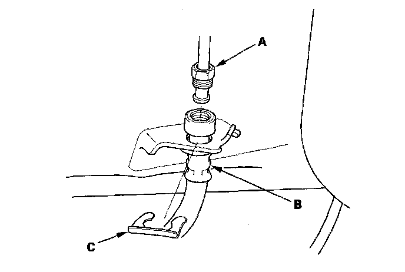
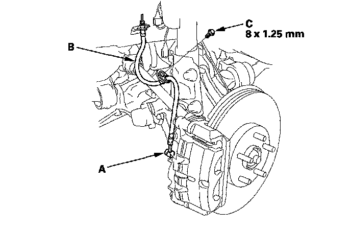
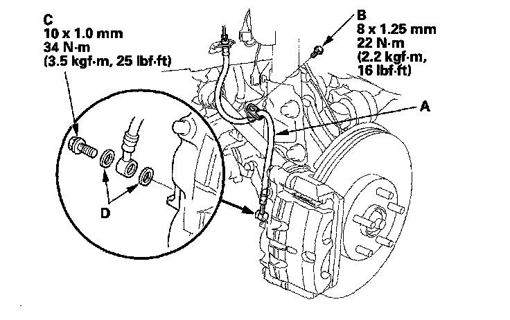
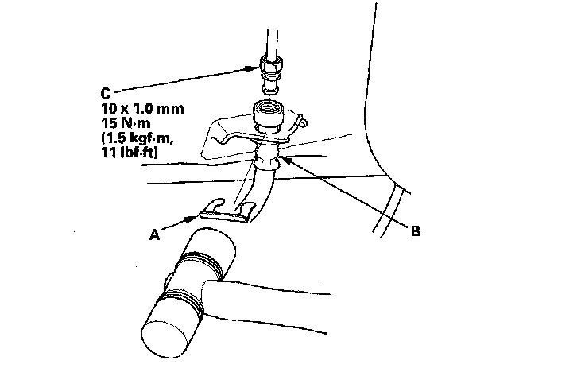
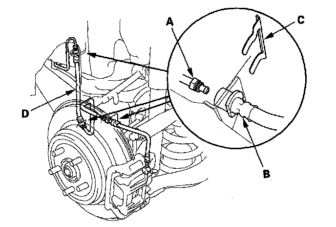
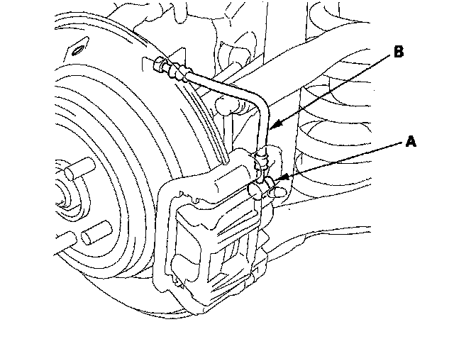
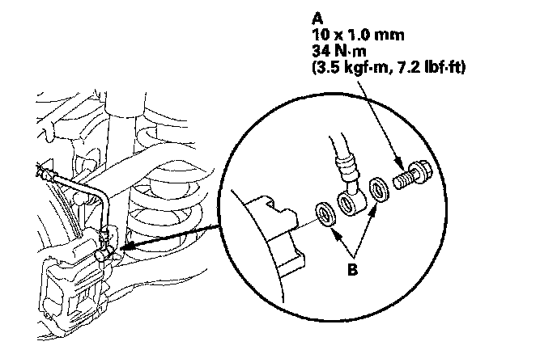
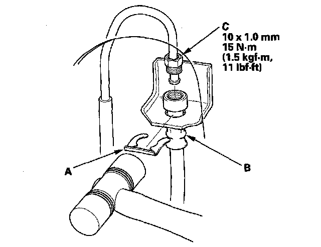

Brake Hose/Line: Service and Repair
Brake Hose ReplacementNOTE:
^ Before reassembling, check that all parts are free of dirt and other foreign particles.
^ Replace parts with new ones whenever specified to do so.
^ Do not spill brake fluid on the vehicle; it may damage the paint; if brake fluid gets on the paint, wash it off immediately with water.
^ To prevent the brake fluid from flowing, plug and cover the hose ends and joints with a shop towel or equivalent material.
Removal - Front
1. Remove the front wheel.
2. Disconnect the brake line (A) from the brake hose (B), then remove the brake hose clip (C).

3. Remove the banjo bolt (A), and disconnect the brake hose (8) from the caliper.

4. Remove the brake hose mounting bolt (C), then remove the brake hose.
Installation - Front
1. Install the brake hose (A) with the mounting bolt (B).

2. Connect the brake hose to the caliper with the banjo bolt (C) and new sealing washers (D).
3. Install a new brake hose clip (A) to the brake hose (B) on the bracket, then connect the brake line (C). Do not twist the brake hose.

4. After installing the brake hose, bleed the brake system.
5. Do the following checks:
^ Check the brake hose and line joint for leaks, and tighten if necessary.
^ Check the brake hoses for interference and twisting.
6. Clean the mating surface of the brake disc and the inside of the wheel, then install the front wheel.
Removal - Rear
1. Remove the rear wheel.
2. Disconnect the brake lines (A) from the brake hoses (B), then remove the brake hose clips (C).

3. Remove the front side brake hose (D).
4. Remove the banjo bolt (A), and disconnect the brake hose from the caliper.

5. Remove the rear side brake hose (B).
Installation - Rear
1. Connect the rear side brake hose to the caliper with the banjo bolt (A) and new sealing washers (B).

2. Install new brake hose clip (A) to the brake hoses (B) on the brackets, then connect the brake lines (C). Do not twist the brake hoses.

3. After installing the brake hoses, bleed the brake system.
4. Do the following checks:
^ Check the brake hose and line joint for leaks, and tighten if necessary.
^ Check the brake hoses for interference and twisting.
5. Clean the mating surface of the brake disc/drum and the inside of the wheel, then install the rear wheel.